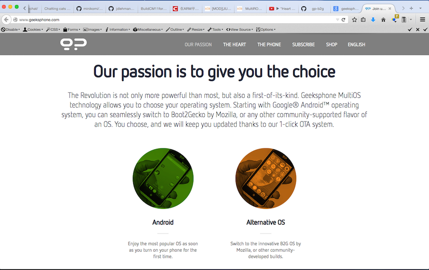
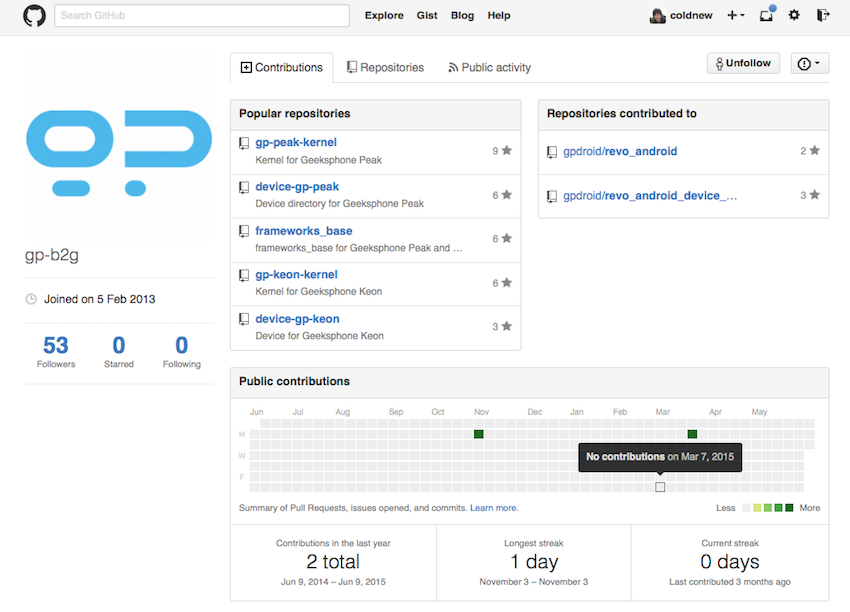

在前面的文章裡面，我說了 Geeksphone Revolution 並非開發者友好的手機 ，這是為什麼
呢?在這邊文章讓我來一一吐槽吧，首先先讓我們看看官網上的其中一篇宣傳

廣告看起來很好很強大，而他的 OTA 換刷不同的 OS 我也在 Geeksphone Revolution 開箱 文當中展示過了，那問題出在哪？問題是出在 you can seamlessly switch to Boot2Gecko by Mozilla, or any other community-supported flavor of an OS 這句話 啊… 我們先說 Geeksphone Revolution 的 Firefox OS 支援好了，事實上這隻手機 根 本沒有 被 Mozilla 所支援，這點可以從 mozilla-b2g/B2G/config.sh 這份檔案看到， B2G 支援的清單有 Geeksphone 其他的手機 (peaks, keon)，但是並沒有 revolution 這隻， 到底為什麼呢?
追根究柢的原因，是出在 Intel 身上， Geeksphone Revolution 使用 Intel 的 CPU 正是其最大的敗筆。疑 !? Intel 不是支援 Linux 最好的廠商之一嗎? 是的，但是很可惜 這台手機用的 Intel Atom Z2560 所搭載的 GPU 是知名的 PowerVR，這廠牌除了並不 開放源碼以外，也幾乎不提供任何文檔 (請記住，Intel 自己的 GPU driver 是開源的)， 雖然社群 曾經 想要使用逆向工程來製作出 Opensource 的驅動，不過目前看起來 進展有限。
除了 PowerVR 以外，另外一個真正的元兇就是 Intel 了，我們來看看 Geeksphone Revolution 提供的 boot.img 長什麼樣子
coldnew@Rosia ~/Revolution $ hexdump -C boot.img | head -n 10 00000000 24 4f 53 24 00 00 01 bf 01 01 38 00 00 00 00 00 |$OS$......8.....| 00000010 00 00 00 00 00 00 00 00 00 00 00 00 00 00 00 00 |................| 00000020 00 00 00 00 01 00 00 00 00 00 10 01 00 10 10 01 |................| 00000030 a4 2f 00 00 00 00 00 00 ff ff ff ff ff ff ff ff |./..............| 00000040 ff ff ff ff ff ff ff ff ff ff ff ff ff ff ff ff |................| * 000001b0 ff ff ff ff ff ff ff ff 00 00 00 00 00 00 00 00 |................| 000001c0 00 00 00 00 00 00 00 00 00 00 00 00 00 00 00 00 |................| * 000001f0 00 00 00 00 00 00 00 00 00 00 00 00 00 00 55 aa |..............U.|
嗯？這樣子有什麼問題? 那麼再來讓我們看看 Android 一般的 boot.img 是怎樣的
coldnew@Rosia ~/AOSP $ hexdump -C boot.img | head -n 10 00000000 41 4e 44 52 4f 49 44 21 f8 b3 25 00 00 80 00 10 |ANDROID!..%.....| 00000010 26 86 03 00 00 00 00 11 00 00 00 00 00 00 f0 10 |&...............| 00000020 00 01 00 10 00 08 00 00 00 00 00 00 00 00 00 00 |................| 00000030 00 00 00 00 00 00 00 00 00 00 00 00 00 00 00 00 |................| 00000040 63 6f 6e 73 6f 6c 65 3d 74 74 79 6d 78 63 30 2c |console=ttymxc0,| 00000050 31 31 35 32 30 30 20 69 6e 69 74 3d 2f 69 6e 69 |115200 init=/ini| 00000060 74 20 76 69 64 65 6f 3d 6d 78 63 66 62 30 3a 64 |t video=mxcfb0:d| 00000070 65 76 3d 6c 64 62 2c 4c 44 42 2d 58 47 41 2c 69 |ev=ldb,LDB-XGA,i| 00000080 66 3d 52 47 42 32 34 2c 62 70 70 3d 31 36 2c 6c |f=RGB24,bpp=16,l| 00000090 64 62 3d 73 69 6e 30 20 66 62 6d 65 6d 3d 32 38 |db=sin0 fbmem=28|
有沒有注意到，正規的 Android boot.img 是從 ANDROID! 開始的，也就是說
Geeksphone Revolution 使用的 boot.img 是 特殊規格 的，我們可以在 LWN.net 找到 相關
的描述 ，簡單的說 Intel 對於系統的安全性無微不至，即使是個 boot.img 也會經過安全
的加密手續讓你的系統服服貼貼的，所以使用 Intel 的 x86 Android 是很安全的，不會有
可惡的第三方開發者亂搞鬼。我的天啊…..，而加密用的工具並不會公開給一般人，這一點我們
可以在 Intel Developer Zone 看到，也因此，在 CM11 編譯教學 裡面就看到了以下這段話
哼哼，你可以編譯 rootfs，可是最關鍵的 boot.img 我可沒辦法讓你自己改喔 !! 我想這
也是為什麼 Mozilla 無法將其收錄至官方的原因之一， 你無法修改 kernel ，這問題很
嚴重，因為需要特別的功能都需要重新編譯 Linux Kernel，但是如果無法將新的 Linux 弄
到機器上，那就不用玩了(舉例來說，Ubuntu Touch 需要 Kernel 打開 LXC 支援，不能換
Linux Kernel 就沒辦法玩 Ubuntu Touch 了）。在往前對比他的廣告: 你可以安裝社群製
作的 OS，嗯….社群連換個 Linux Kernel 都不行了，誰會有興趣啊 (翻桌)。
不過幸好開源社群強者多多，透過前人們的努力，我將在下一篇文章講解如何繞過 boot.img 的組成。
除了 Linux Kernel 以外，讓我們來看看 Geeksphone Revolution 所公開的 GPL 程式碼部 分吧，在官方論壇的 這篇文章 提到了他們 GPL 相關程式碼的下載點以及 GitHub 位址， 讓我們迫不及待的進入他們的 GitHub Repo 吧，首先映入眼簾的東西是這個:

靠夭，貢獻者認證的綠色小點點好像有點少…. 算了，沒關係，有提供程式碼就好了，因 此我們來看看其中一個和 Firefox OS 相關的程式碼吧，基本上只要依照 git log 就可以很 容易將這些程式和官方的 Firefox OS 整合，所以我點入了gp-revolution-gecko ……
什麼 !? first commit!! first commit !! first commit!!! geeksphone 居然把所
有 git commit log 弄掉了…..我的天啊…..，你可以把自己的 commit log 縮減為一個，
但是 請不要把別人的 commit 紀錄抹消掉好嗎 !!!!!
就是這樣，除了這些程式碼以外，Linux Kernel 也沒有任何 commit 紀錄可以追蹤，甚至連
Makefile 都給我失蹤了….，並且這些程式碼放上去之後 沒有任何新的 Activity...
，哼哼 好一個給 geek 用的 geekphone 啊…..
寫到這，相信大家應該可以理解為什麼我會說這隻手機並非開發者有好的了吧? 什麼 !? 你 覺得這樣更有挑戰性很好玩 !? 那來加入我吧 XD